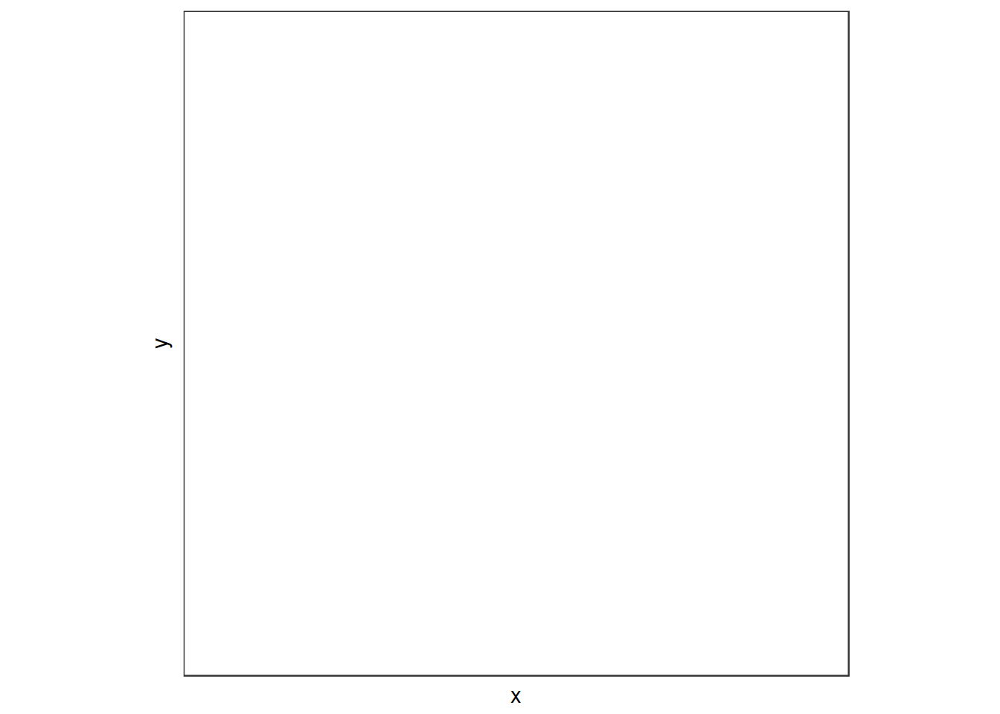

Colorbrewer and viridis have been the two main resources for this page.
library(RColorBrewer)
display.brewer.all(colorblindFriendly = TRUE)Please see the viridis: Default Color Maps from ‘matplotlib’ CRAN package. Thre is a great vignette by the package authors.
library(ggplot2)
library(viridis)
ggplot(data.frame(x = rnorm(10000), y = rnorm(10000)), aes(x = x, y = y)) +
geom_hex() +
coord_fixed() +
scale_fill_viridis() + # The virdis color scale
theme_bw()## Warning: Computation failed in `stat_binhex()`:
## Package `hexbin` required for `stat_binhex`.
## Please install and try again.
library(scales)
show_col(viridis_pal(option = 'viridis')(10))show_col(viridis_pal(option = 'magma')(10))Here’s a function to plot colors in a series of rectangles (written by Vicki)
pal <- function(col, border = "light gray", ...) {
n <- length(col)
plot(0, 0,
type = "n",
xlim = c(0, 1),
ylim = c(0, 1),
axes = FALSE,
xlab = "", ylab = "", ...)
rect(0:(n - 1) / n,
0,
1:n/n,
1,
col = col,
border = border)
}HEX
#b2182b
#ef8a62
#fddbc7
#d1e5f0
#67a9cf
#2166accolours <- c(
'#b2182b',
'#ef8a62',
'#fddbc7',
'#d1e5f0',
'#67a9cf',
'#2166ac'
)
pal(colours)colours <- c(
'#b2182b',
'#ef8a62',
'#fddbc7',
'#ffffff',
'#d1e5f0',
'#67a9cf',
'#2166ac'
)
pal(colours)Here is a function to plot colors in a pie chart (written by Vicki)
wheel <- function(col, radius = 1, ...) {
pie(rep(1, length(col)), col = col, radius = radius, ...)
}Colorbrewer only has 1 color scheme that is both colorblind and print friendly. It only allows 4 classes.
Hex:
#a6cee3
#1f78b4
#b2df8a
#33a02ccbPalette <- c(
'#a6cee3',
'#1f78b4',
'#b2df8a',
'#33a02c'
)
wheel(cbPalette)Here we added a grey color to be used as a NA value in plots.
cbPalette <- c(
'#a6cee3',
'#1f78b4',
'#b2df8a',
'#33a02c',
"#999999",
'#000000',
'#ffffff'
)
wheel(cbPalette)RGB:
166,206,227
31,120,180
178,223,138
51,160,44CMTK
35,7,0,0
90,30,0,0
30,0,45,0
80,0,100,0The colorbline friendly pallete is the same as the colorblind and print friendly color scheme.
Removing the colorblind friendly limitation, gives us a maximum of 9 qualitative colors. There is only 1 color scheme for this many classes.
HEX
#e41a1c
#377eb8
#4daf4a
#984ea3
#ff7f00
#ffff33
#a65628
#f781bf
#999999cbPalette <- c(
'#e41a1c',
'#377eb8',
'#4daf4a',
'#984ea3',
'#ff7f00',
'#ffff33',
'#a65628',
'#f781bf',
'#999999'
)
wheel(cbPalette)RGB
228,26,28
55,126,184
77,175,74
152,78,163
255,127,0
255,255,51
166,86,40
247,129,191
153,153,153CMYK
10,90,80,0
80,30,0,0
70,0,80,0
40,65,0,0
0,50,100,0
0,0,80,0
35,60,80,0
0,50,0,0
0,0,0,40